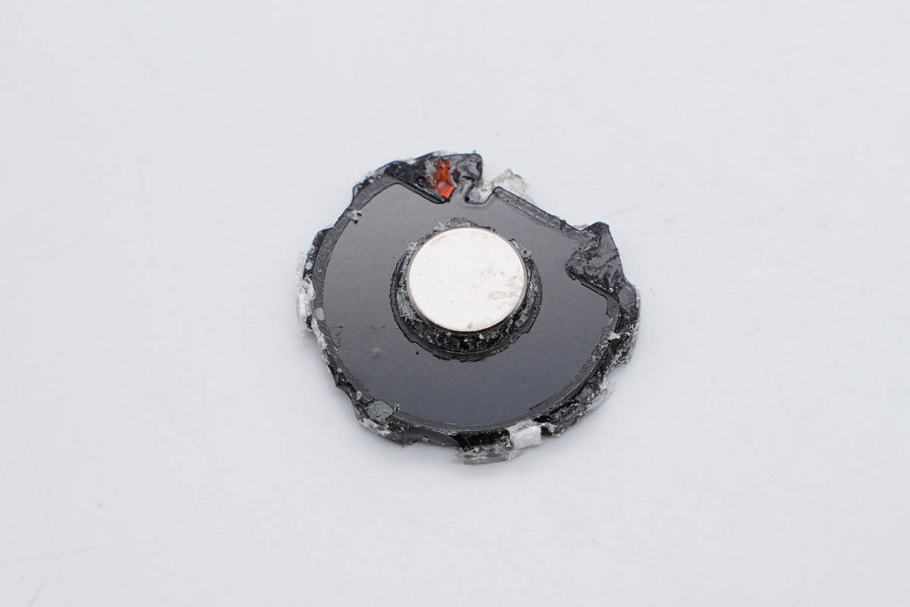
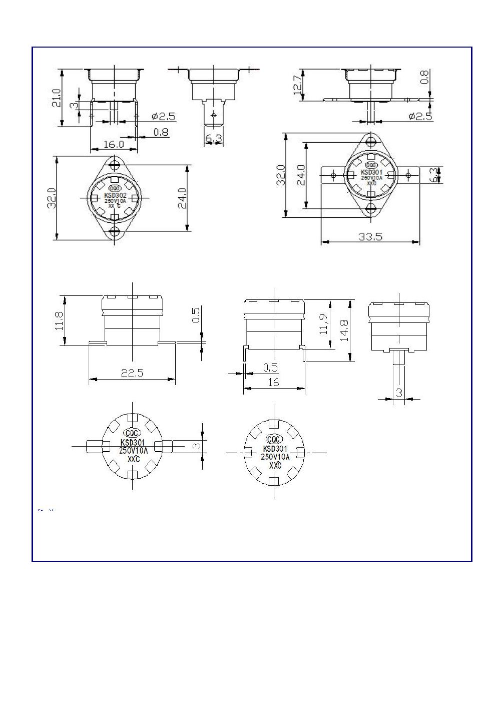
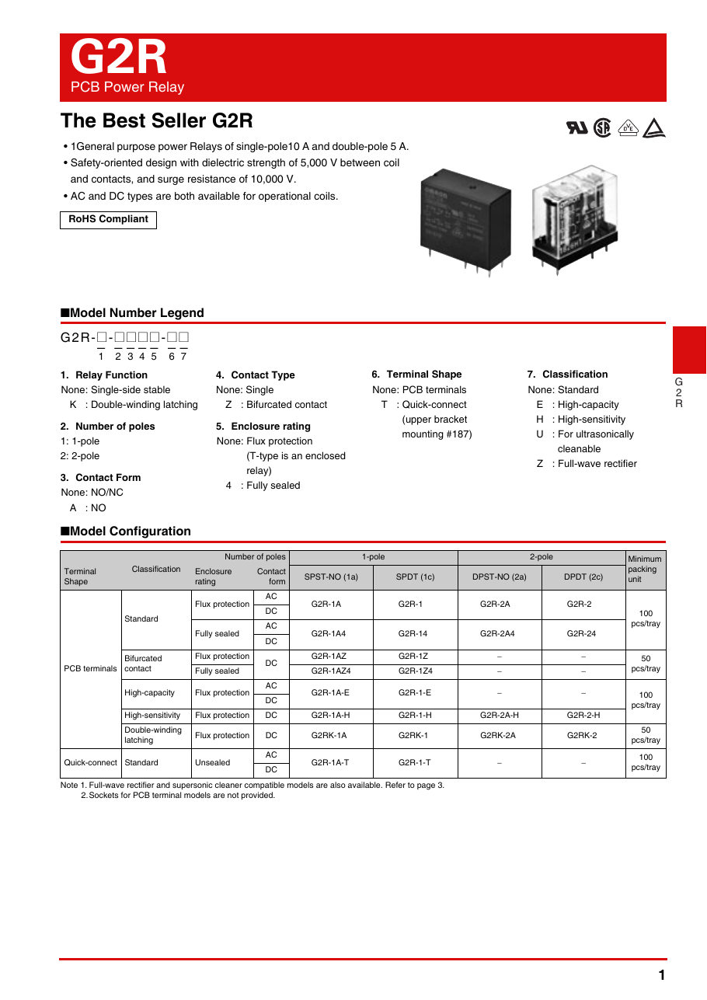
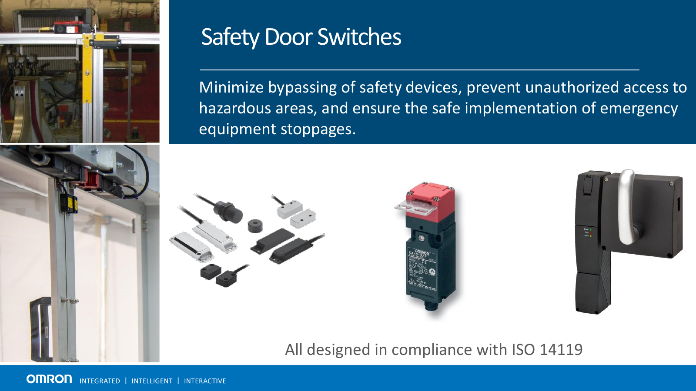

Product structure cases
结构设计案例库
按结构原理归档的产品与机械设计案例，覆盖壳体与外观件、连接与紧固、转轴与铰链、机构与运动、密封与防护、拆解与可维修、材料与工艺。参数只写来源里已有的，不估算、不编造。
分类入口
浏览全部
壳体与外观件
外壳拆分、外观件固定、壁厚/加强筋、开孔、覆面等「看得见的结构」。

连接与紧固
零件之间如何连在一起：卡扣、螺丝与嵌件、卡口、滑轨、磁吸、胶粘、焊接等。

转轴与铰链
一切转动连接：阻尼转轴、折叠屏铰链、360° 转轴、一体成型活动铰链。

机构与运动
会动的机构：按压弹跳、锁扣、齿轮/蜗杆、凸轮连杆、弹簧、柔顺机构、力反馈。

密封与防护
防水、防尘、防跌：密封圈、O 形圈、点胶、CIPG、透气膜、缓冲结构。

拆解与可维修
整机拆解分析、模块化、可维修设计，以及值得警惕的反面案例。

材料与工艺
注塑、钣金、压铸/CNC、3D 打印、包胶双色、表面处理对结构的约束与案例。
最新收录
全部案例
Apple Watch 磁吸充电盘：中心单颗磁铁对位与电感耦合（对照手机环形阵列）
Apple Watch 的磁吸充电盘用**中心一颗小磁铁**把圆盘吸到表背并对准，再靠盘内线圈与手表做电感耦合充电；磁铁在铁氧体背面中心，线圈坐在铁氧体正面的凹槽里，底部铁板在对应磁铁处镂空。它和 iPhone MagSafe 那种绕线圈的一圈 18 颗磁铁不是同一套几何。

KTR MINEX-S 磁力联轴器：隔离套两侧磁转子无接触传扭
MINEX-S 是带隔离套的永磁同步联轴器：外转子和内转子隔着气隙对置，用交替极性的永磁体无接触传扭矩；固定在壳体上的隔离套把介质腔和大气完全隔开，密封是平面密封或 O 形圈这样的静密封，轴不必穿过动密封。这是传动，不是「把两件东西吸住」。金属隔离套在旋转磁场里会生涡流发热，需要冷却或改用哈氏合金、PEEK、陶瓷。

MagSafe 1-2 笔记本磁吸充电头：磁力保持触点对中，拉力过大时整头脱落
MagSafe 与 MagSafe 2 把笔记本电源插头做成「磁吸对中 + 弹簧触针导电」：插头与插座上的磁元件（磁铁或铁磁衔铁）互相吸引，把弹簧顶针压到对应平面触点上；线缆被绊到或受到足够大的非轴向拉力时，整个插头从插座上脱落，而不是把电脑拽下桌或把插针拗断。它解决的是可分离电源连接，不是 iPhone 那种环形磁铁给无线充电线圈对中，也不是弹簧顶针元件本身的内部结构。

iPhone MagSafe 环形磁铁阵列：18 颗磁铁把线圈对中并对附件保持
iPhone 12 起的 MagSafe 在无线充电线圈周围排布一圈磁铁（iFixit 与 WPC 都写到 iPhone 12 上是 18 颗），用磁极布置把充电器或附件的发射线圈拉到接收线圈的中心，并提供保持力；充电仍然靠线圈之间的感应耦合，磁铁本身不传输电能。它和笔记本 MagSafe 1-2 的「磁吸插头 + 弹簧顶针」不是同一条结构路径。

无铆连接（Clinching、TOX）：冲头与凹模把两层板挤压成机械互锁
无铆连接不用铆钉也不熔化金属，而是用凸模和凹模把两层（或多层）板冷挤到一起，形成颈部和镶嵌量构成的机械互锁；抗剪主要看颈部厚度，抗剥离主要看镶嵌量。

机床电永磁吸盘：脉冲充磁后停电仍保持夹紧
机床电永磁吸盘用「可逆的铝镍钴 + 不可逆的钕铁硼 + 只在切换时通电的线圈」来夹持铁质工件：给线圈一个 0.1–2 秒量级的脉冲，铝镍钴极性翻转，与钕铁硼同向时磁力线走出盘面吸住工件；再给一次脉冲让铝镍钴反向，磁力线在盘内自成回路，工件松开。夹持过程不必通电，停电也不会像电磁门锁那样自动释放。

DIP 滑动拨码开关：挡块推动 V 形滑块，使一对镀金固定触点接通或断开
DIP 拨码开关是一排做成像集成电路双列直插（或对应的表面贴装）外形的小型设定开关：每个键位用挡块推动 V 形金属滑块，把基座上的一对固定触点接通或断开，用来在 PCB 上设置模式，而不是给人频繁点击。立创介绍的一般构造是罩盖、挡块、滑块和基座四件；标准端子间距 2.54 mm，另有 1.27 mm 半间距，高度除普通 3.5 mm 外还有 2.2 mm 和 1.55 mm 的低矮型。它既不是钢琴键那种长摆杆按压外形，也不是旋转 BCD 编码开关用一圈档位输出 4 位代码。

KSD301 突跳式温控器：蝶形双金属片到位后瞬间切换触点
KSD301 把一片蝶形双金属片装在带铝盖的电木或陶瓷壳里：温度到达设定值时，碟片瞬间翻转到另一侧，带动动簧片使触点迅速断开或接通，冷却后再翻回。创华维规格书给出动作温度范围 −20～255 °C，额定电流 5 / 8 / 10 / 15 / 16 A，电气寿命在额定功率、功率因数 0.8 下动作 10000 次后，温度变化应在初始值的 ±7 °C 以内。它不是电子探头加继电器，也不是缓慢弯曲、触点慢慢分开的非突跳双金属条。

PCB功率继电器：线圈吸合衔铁带动触点，线圈与触点高压隔离（以 Omron G2R 为例）
电磁继电器用线圈里的电流建立磁路，让衔铁克服返回弹簧被吸向铁芯，再带动触点闭合或转换；线圈断电后弹簧把衔铁拉回，触点回到原来的常闭或常开状态，从而实现用较小的控制电流去开关另一路负载。芯三七把典型结构分成电磁系统（铁芯、轭铁、衔铁、线圈）、接触系统和传动复原机构。Omron G2R 把这一结构做成印制板功率继电器：单极 10 A、双极 5 A，线圈与触点之间的耐压 5,000 V，浪涌耐受 10,000 V，动作时间最多 15 ms。它不是热磁断路器，也不是已经单独成篇的交流接触器。

安全门舌片联锁：专用执行器转动内凸轮，以直接断开动作打开 NC 触点
舌片式安全门联锁把开关本体装在机器上、把专用执行器装在门上：关门时执行器插入并转动内凸轮，NC 触点靠弹簧力闭合，控制系统判定门已关闭；开门时凸轮把 NC 触点强制推开，切断电路，即使启动按钮被按下机器也不能再开。IDEC 强调这种「直接断开动作」要求执行器到 NC 触点之间只有非弹性结构，即使触点已经熔焊，开门的力仍能把触点分开。它不是普通限位开关，也不是用螺丝刀就能拨动的门磁。

工业限位开关：在微动开关外面加防护壳和滚轮杠杆等致动器
工业限位开关（行程开关、极限开关）不是再发明一种触点，而是把一颗快动微动开关装进金属或强化树脂外壳，再配上柱塞、滚轮或杠杆等致动器，用来在机台外侧承受撞击、油水和粉尘。庆丰把它概括成「同一颗心脏，差在有没有穿盔甲」。天得 TZ 系列限位开关在庆丰文中的口径是防护 IP65–IP67，机械寿命 1000 万次、电气寿命 50 万次；同文列出的裸微动例如 Omron V-15 可到 250 VAC / 15 A，与库内已收录的鼠标用 D2FC（6 VDC / 1 mA）不是同一使用场合。

微波炉门三联联锁：第一、第二联锁断开供电，监控开关在门开时短接熔断保护
微波炉用门钩去按一组微动开关，而不是只靠一只门磁：关门后第一、第二联锁开关接通，给高压变压器等供电，同时门监控开关断开；开门后两只联锁先断开切断供电，监控开关再接通，一旦联锁拒动或粘连，监控开关就把电源短接，让熔断器断开，避免炉门打开时仍在发射微波。导文对格兰仕 WP700（P7021TP-6）的拆解写明，这一先断后通的时间差由下门钩的曲线长度决定；Merrychef 402s 则用教科书式的 Primary、Secondary 和 Monitor 布置，并另加第四只开关给逻辑板发门状态。它不是普通门控微动的简单并联，也不是机床舌片安全门联锁。
精选案例
评分 5 分Apple Watch 磁吸充电盘：中心单颗磁铁对位与电感耦合（对照手机环形阵列）
Apple Watch 的磁吸充电盘用**中心一颗小磁铁**把圆盘吸到表背并对准，再靠盘内线圈与手表做电感耦合充电；磁铁在铁氧体背面中心，线圈坐在铁氧体正面的凹槽里，底部铁板在对应磁铁处镂空。它和 iPhone MagSafe 那种绕线圈的一圈 18 颗磁铁不是同一套几何。
KTR MINEX-S 磁力联轴器：隔离套两侧磁转子无接触传扭
MINEX-S 是带隔离套的永磁同步联轴器：外转子和内转子隔着气隙对置，用交替极性的永磁体无接触传扭矩；固定在壳体上的隔离套把介质腔和大气完全隔开，密封是平面密封或 O 形圈这样的静密封，轴不必穿过动密封。这是传动，不是「把两件东西吸住」。金属隔离套在旋转磁场里会生涡流发热，需要冷却或改用哈氏合金、PEEK、陶瓷。
MagSafe 1-2 笔记本磁吸充电头：磁力保持触点对中，拉力过大时整头脱落
MagSafe 与 MagSafe 2 把笔记本电源插头做成「磁吸对中 + 弹簧触针导电」：插头与插座上的磁元件（磁铁或铁磁衔铁）互相吸引，把弹簧顶针压到对应平面触点上；线缆被绊到或受到足够大的非轴向拉力时，整个插头从插座上脱落，而不是把电脑拽下桌或把插针拗断。它解决的是可分离电源连接，不是 iPhone 那种环形磁铁给无线充电线圈对中，也不是弹簧顶针元件本身的内部结构。
iPhone MagSafe 环形磁铁阵列：18 颗磁铁把线圈对中并对附件保持
iPhone 12 起的 MagSafe 在无线充电线圈周围排布一圈磁铁（iFixit 与 WPC 都写到 iPhone 12 上是 18 颗），用磁极布置把充电器或附件的发射线圈拉到接收线圈的中心，并提供保持力；充电仍然靠线圈之间的感应耦合，磁铁本身不传输电能。它和笔记本 MagSafe 1-2 的「磁吸插头 + 弹簧顶针」不是同一条结构路径。
无铆连接（Clinching、TOX）：冲头与凹模把两层板挤压成机械互锁
无铆连接不用铆钉也不熔化金属，而是用凸模和凹模把两层（或多层）板冷挤到一起，形成颈部和镶嵌量构成的机械互锁；抗剪主要看颈部厚度，抗剥离主要看镶嵌量。
机床电永磁吸盘：脉冲充磁后停电仍保持夹紧
机床电永磁吸盘用「可逆的铝镍钴 + 不可逆的钕铁硼 + 只在切换时通电的线圈」来夹持铁质工件：给线圈一个 0.1–2 秒量级的脉冲，铝镍钴极性翻转，与钕铁硼同向时磁力线走出盘面吸住工件；再给一次脉冲让铝镍钴反向，磁力线在盘内自成回路，工件松开。夹持过程不必通电，停电也不会像电磁门锁那样自动释放。
DIP 滑动拨码开关：挡块推动 V 形滑块，使一对镀金固定触点接通或断开
DIP 拨码开关是一排做成像集成电路双列直插（或对应的表面贴装）外形的小型设定开关：每个键位用挡块推动 V 形金属滑块，把基座上的一对固定触点接通或断开，用来在 PCB 上设置模式，而不是给人频繁点击。立创介绍的一般构造是罩盖、挡块、滑块和基座四件；标准端子间距 2.54 mm，另有 1.27 mm 半间距，高度除普通 3.5 mm 外还有 2.2 mm 和 1.55 mm 的低矮型。它既不是钢琴键那种长摆杆按压外形，也不是旋转 BCD 编码开关用一圈档位输出 4 位代码。
KSD301 突跳式温控器：蝶形双金属片到位后瞬间切换触点
KSD301 把一片蝶形双金属片装在带铝盖的电木或陶瓷壳里：温度到达设定值时，碟片瞬间翻转到另一侧，带动动簧片使触点迅速断开或接通，冷却后再翻回。创华维规格书给出动作温度范围 −20～255 °C，额定电流 5 / 8 / 10 / 15 / 16 A，电气寿命在额定功率、功率因数 0.8 下动作 10000 次后，温度变化应在初始值的 ±7 °C 以内。它不是电子探头加继电器，也不是缓慢弯曲、触点慢慢分开的非突跳双金属条。
PCB功率继电器：线圈吸合衔铁带动触点，线圈与触点高压隔离（以 Omron G2R 为例）
电磁继电器用线圈里的电流建立磁路，让衔铁克服返回弹簧被吸向铁芯，再带动触点闭合或转换；线圈断电后弹簧把衔铁拉回，触点回到原来的常闭或常开状态，从而实现用较小的控制电流去开关另一路负载。芯三七把典型结构分成电磁系统（铁芯、轭铁、衔铁、线圈）、接触系统和传动复原机构。Omron G2R 把这一结构做成印制板功率继电器：单极 10 A、双极 5 A，线圈与触点之间的耐压 5,000 V，浪涌耐受 10,000 V，动作时间最多 15 ms。它不是热磁断路器，也不是已经单独成篇的交流接触器。
安全门舌片联锁：专用执行器转动内凸轮，以直接断开动作打开 NC 触点
舌片式安全门联锁把开关本体装在机器上、把专用执行器装在门上：关门时执行器插入并转动内凸轮，NC 触点靠弹簧力闭合，控制系统判定门已关闭；开门时凸轮把 NC 触点强制推开，切断电路，即使启动按钮被按下机器也不能再开。IDEC 强调这种「直接断开动作」要求执行器到 NC 触点之间只有非弹性结构，即使触点已经熔焊，开门的力仍能把触点分开。它不是普通限位开关，也不是用螺丝刀就能拨动的门磁。
工业限位开关：在微动开关外面加防护壳和滚轮杠杆等致动器
工业限位开关（行程开关、极限开关）不是再发明一种触点，而是把一颗快动微动开关装进金属或强化树脂外壳，再配上柱塞、滚轮或杠杆等致动器，用来在机台外侧承受撞击、油水和粉尘。庆丰把它概括成「同一颗心脏，差在有没有穿盔甲」。天得 TZ 系列限位开关在庆丰文中的口径是防护 IP65–IP67，机械寿命 1000 万次、电气寿命 50 万次；同文列出的裸微动例如 Omron V-15 可到 250 VAC / 15 A，与库内已收录的鼠标用 D2FC（6 VDC / 1 mA）不是同一使用场合。
微波炉门三联联锁：第一、第二联锁断开供电，监控开关在门开时短接熔断保护
微波炉用门钩去按一组微动开关，而不是只靠一只门磁：关门后第一、第二联锁开关接通，给高压变压器等供电，同时门监控开关断开；开门后两只联锁先断开切断供电，监控开关再接通，一旦联锁拒动或粘连，监控开关就把电源短接，让熔断器断开，避免炉门打开时仍在发射微波。导文对格兰仕 WP700（P7021TP-6）的拆解写明，这一先断后通的时间差由下门钩的曲线长度决定；Merrychef 402s 则用教科书式的 Primary、Secondary 和 Monitor 布置，并另加第四只开关给逻辑板发门状态。它不是普通门控微动的简单并联，也不是机床舌片安全门联锁。